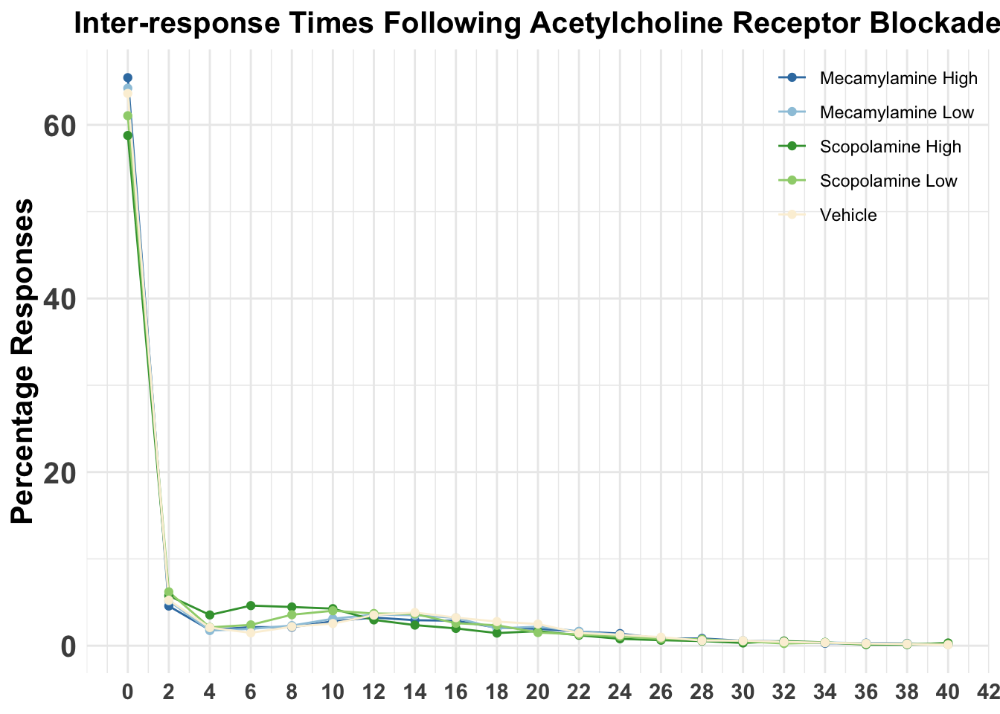
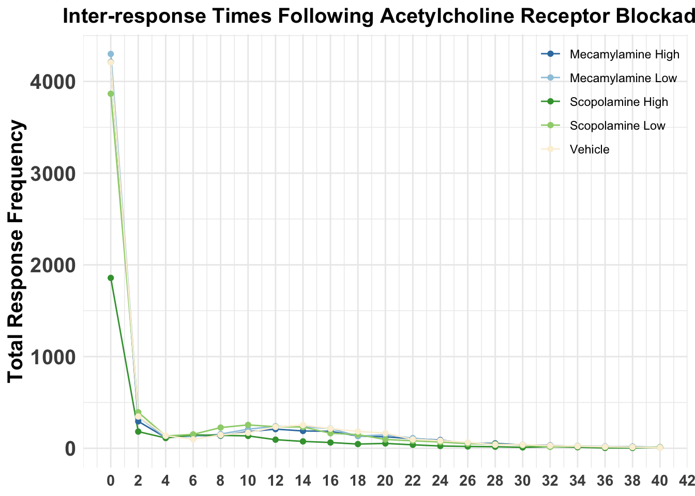
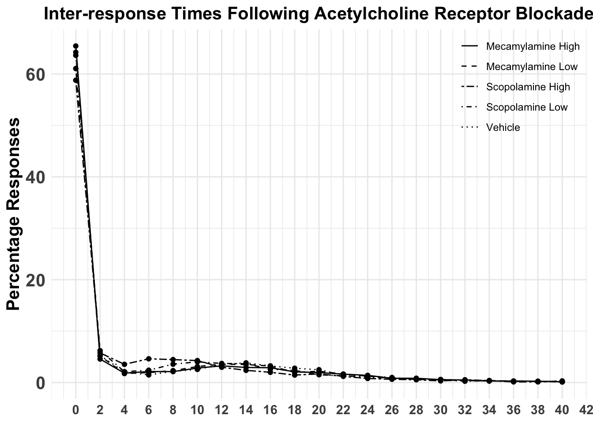

This project aims to create the inter-response time plot for my first year project, using codes I created in Portfolio 3. Because it is a lot of work, here is another project.
library(readxl)
library(tidyverse)## ── Attaching core tidyverse packages ──────────────────────── tidyverse 2.0.0 ──
## ✔ dplyr 1.1.4 ✔ readr 2.1.5
## ✔ forcats 1.0.0 ✔ stringr 1.5.1
## ✔ ggplot2 3.5.2 ✔ tibble 3.2.1
## ✔ lubridate 1.9.4 ✔ tidyr 1.3.1
## ✔ purrr 1.0.4
## ── Conflicts ────────────────────────────────────────── tidyverse_conflicts() ──
## ✖ dplyr::filter() masks stats::filter()
## ✖ dplyr::lag() masks stats::lag()
## ℹ Use the conflicted package (<http://conflicted.r-lib.org/>) to force all conflicts to become errorsIM_DD1_ArrayC <- read_excel("data/fyp/IM_DD1_ArrayC_IncludesILandTest.xlsx")
IM_DD2_ArrayC <- read_excel("data/fyp/IM_DD2_ArrayC_IncludesILandTest.xlsx")
IM_DD3_ArrayC <- read_excel("data/fyp/IM_DD3_ArrayC_IncludesILandTest.xlsx")
IM_DD4_ArrayC <- read_excel("data/fyp/IM_DD4_ArrayC_IncludesILandTest.xlsx")
IM_DD5_ArrayC <- read_excel("data/fyp/IM_DD5_ArrayC_IncludesILandTest.xlsx")IM_DD1_ArrayC$Day <- "DD1"
IM_DD2_ArrayC$Day <- "DD2"
IM_DD3_ArrayC$Day <- "DD3"
IM_DD4_ArrayC$Day <- "DD4"
IM_DD5_ArrayC$Day <- "DD5"
# combine Carray data from all five days
IM_Carray_all <- bind_rows(IM_DD1_ArrayC, IM_DD2_ArrayC, IM_DD3_ArrayC, IM_DD4_ArrayC, IM_DD5_ArrayC)
# data cleaning
#clean the rows
table(IM_Carray_all$Subject) ##
## 0 IL1 IL10 IL11 IL12 IL2 IL3 IL4 IL5 IL6
## 439 2205 3086 3266 1871 1530 3019 1203 2313 2906
## IL7 IL8 IL9 IM1 IM10 IM11 IM12 IM2 IM3 IM4
## 2013 1628 4146 1752 1440 1520 2939 4211 2672 2550
## IM5 IM6 IM7 IM8 IM9 Subject
## 2904 2048 3079 1992 2325 127#155 rows are the header, need to filter them out
IM_Carray <- IM_Carray_all %>%
filter(!(Subject %in% "Subject"))
#790 rows are chamber testing programs, need to filter them out
IM_Carray <- IM_Carray %>%
filter(Subject != 0)
as_tibble(IM_Carray)## # A tibble: 58,618 × 6
## Subject Experiment Drug Box Carray Day
## <chr> <chr> <chr> <chr> <chr> <chr>
## 1 IL1 PR2_EBC_TASK 0 1 0 DD1
## 2 IL1 PR2_EBC_TASK 0 1 256 DD1
## 3 IL1 PR2_EBC_TASK 0 1 2 DD1
## 4 IL1 PR2_EBC_TASK 0 1 0 DD1
## 5 IL1 PR2_EBC_TASK 0 1 69 DD1
## 6 IL1 PR2_EBC_TASK 0 1 16 DD1
## 7 IL1 PR2_EBC_TASK 0 1 0 DD1
## 8 IL1 PR2_EBC_TASK 0 1 0 DD1
## 9 IL1 PR2_EBC_TASK 0 1 0 DD1
## 10 IL1 PR2_EBC_TASK 0 1 0 DD1
## # ℹ 58,608 more rows#check again
table(IM_Carray$Subject) ##
## IL1 IL10 IL11 IL12 IL2 IL3 IL4 IL5 IL6 IL7 IL8 IL9 IM1 IM10 IM11 IM12
## 2205 3086 3266 1871 1530 3019 1203 2313 2906 2013 1628 4146 1752 1440 1520 2939
## IM2 IM3 IM4 IM5 IM6 IM7 IM8 IM9
## 4211 2672 2550 2904 2048 3079 1992 2325# On one day, we accidentally labeled IM9-12 as IL9-12. So we need to find the day and fix the data.
# check which day is the problematic one
table(IM_Carray$Subject, IM_Carray$Day)##
## DD1 DD2 DD3 DD4 DD5
## IL1 354 466 790 595 0
## IL10 249 484 877 1476 0
## IL11 829 873 606 958 0
## IL12 425 188 319 939 0
## IL2 472 405 459 194 0
## IL3 825 550 723 921 0
## IL4 296 345 178 384 0
## IL5 552 555 777 429 0
## IL6 659 790 759 698 0
## IL7 651 268 679 415 0
## IL8 441 445 427 315 0
## IL9 693 845 1143 1465 0
## IM1 386 450 435 89 392
## IM10 461 434 383 0 162
## IM11 144 399 449 0 528
## IM12 870 897 726 0 446
## IM2 685 1039 1021 991 475
## IM3 516 381 640 514 621
## IM4 617 625 525 238 545
## IM5 722 714 591 560 317
## IM6 466 465 471 133 513
## IM7 573 674 486 573 773
## IM8 519 455 534 48 436
## IM9 315 528 829 0 653# There is no data for IM9-12 on DD4, so we must have done it wrong on this day.
IM_Carray %>%
filter(Day == "DD4") %>%
with(table(Subject, Drug))## Drug
## Subject 0 M_HI M_LO S_HI S_LO VEH
## IL1 595 0 0 0 0 0
## IL10 1077 0 0 0 399 0
## IL11 586 0 0 0 372 0
## IL12 211 0 0 0 0 728
## IL2 194 0 0 0 0 0
## IL3 921 0 0 0 0 0
## IL4 384 0 0 0 0 0
## IL5 429 0 0 0 0 0
## IL6 698 0 0 0 0 0
## IL7 415 0 0 0 0 0
## IL8 315 0 0 0 0 0
## IL9 737 0 0 0 0 728
## IM1 0 0 0 89 0 0
## IM2 0 0 991 0 0 0
## IM3 0 514 0 0 0 0
## IM4 0 0 0 238 0 0
## IM5 0 0 560 0 0 0
## IM6 0 0 0 133 0 0
## IM7 0 0 0 0 573 0
## IM8 0 0 0 48 0 0# From the table, we can see that IM9 (which was typed in as IL9) got VEH, IM10 got S_LO, IM11 got S_LO, and IM12 got VEH, which is consistent with what we have in the injection schedule. So now, we need to change the subject name to the right names, and filter out IL's data.
IM_Carray <- IM_Carray %>%
filter(Drug != 0) %>%
mutate(Subject = ifelse(Subject == "IL9", "IM9", Subject))
IM_Carray <- IM_Carray %>%
filter(Drug != 0) %>%
mutate(Subject = ifelse(Subject == "IL10", "IM10", Subject))
IM_Carray <- IM_Carray %>%
filter(Drug != 0) %>%
mutate(Subject = ifelse(Subject == "IL11", "IM11", Subject))
IM_Carray <- IM_Carray %>%
filter(Drug != 0) %>%
mutate(Subject = ifelse(Subject == "IL12", "IM12", Subject))
#check again
table(IM_Carray$Subject) # so we only have IM's data now##
## IM1 IM10 IM11 IM12 IM2 IM3 IM4 IM5 IM6 IM7 IM8 IM9
## 1752 1839 1892 3667 4211 2672 2550 2904 2048 3079 1992 3053table(IM_Carray$Experiment)##
## DD1 DD2 DD3 DD4 DD5
## 6274 7061 7090 5373 5861table(IM_Carray$Subject, IM_Carray$Drug)##
## M_HI M_HIGH M_LO M_LOW MEC_HI MEC_LO MEC-HI MEC-LO MEC-LOW S_HI S_HIGH
## IM1 0 0 392 0 0 0 386 0 0 89 0
## IM10 0 0 383 0 461 0 0 0 0 162 0
## IM11 0 0 528 0 0 0 399 0 0 0 0
## IM12 726 0 0 0 0 0 0 0 897 446 0
## IM2 0 0 991 0 0 0 1039 0 0 0 0
## IM3 514 0 621 0 0 0 0 0 0 0 0
## IM4 0 0 0 0 0 0 625 525 0 238 0
## IM5 0 591 560 0 0 0 0 0 0 317 0
## IM6 513 0 0 471 0 0 0 0 0 133 0
## IM7 0 0 773 0 0 0 674 0 0 0 486
## IM8 436 0 0 0 0 519 0 0 0 48 0
## IM9 653 0 0 0 0 0 0 0 528 0 0
##
## S_LO SCOP_HI SCOP_LO SCOP-HI SCOP-LO SCOP-LOW SCP-LOW VEH
## IM1 0 0 0 0 435 0 0 450
## IM10 399 0 0 0 0 0 0 434
## IM11 372 144 0 0 0 0 0 449
## IM12 0 0 0 0 870 0 0 728
## IM2 475 0 0 685 0 0 0 1021
## IM3 0 0 0 381 640 0 0 516
## IM4 0 0 0 0 617 0 0 545
## IM5 0 0 722 0 0 0 0 714
## IM6 0 0 0 0 0 0 465 466
## IM7 573 0 0 0 0 0 0 573
## IM8 0 0 0 0 0 455 0 534
## IM9 829 315 0 0 0 0 0 728#So now we need to change the drug name to be consistent
IM_Carray$Drug <- ifelse(IM_Carray$Drug %in% c("M_HI", "MEC_HI", "MEC-HI"), "M_HIGH", IM_Carray$Drug)
IM_Carray$Drug <- ifelse(IM_Carray$Drug %in% c("M_LO", "MEC_LO", "MEC-LO", "MEC-LOW"), "M_LOW", IM_Carray$Drug)
IM_Carray$Drug <- ifelse(IM_Carray$Drug %in% c("S_HI", "SCOP_HI", "SCOP-HI"), "S_HIGH", IM_Carray$Drug)
IM_Carray$Drug <- ifelse(IM_Carray$Drug %in% c("S_LO", "SCOP_LO", "SCOP-LOW", "SCP-LOW", "SCOP-LO"), "S_LOW", IM_Carray$Drug)
# convey Box and Carray to numbers
IM_Carray$Box <- as.numeric(IM_Carray$Box)
IM_Carray$Carray <- as.numeric(IM_Carray$Carray)
#calculate the inter-response time
IM_Carray$time <- round(IM_Carray$Carray)/100
IM_Carray$interval <- c(0, diff(IM_Carray$time))
IM_Carray$interval <- ifelse(IM_Carray$interval < 0, 0, IM_Carray$interval)
# the data is still a little bit messy, some rows are not inter-response time. I have no idea how to filter them out more efficiently, so here it is.
messy_index <- which(IM_Carray$Carray == 0)
# Find the first index where the difference is >= 100
messy_start <- c(1, messy_index[which(diff(messy_index) >= 100) + 1])
exclude_rows <- c()
for (i in messy_start) {
exclude_rows <- c(exclude_rows, i:(i + 10))
}
IM_Carray_clean <- IM_Carray[-exclude_rows, ]
IM_Carray_clean <- IM_Carray_clean %>%
filter(Subject != "IM10")
table(IM_Carray_clean$Subject, IM_Carray_clean$Drug)##
## M_HIGH M_LOW S_HIGH S_LOW VEH
## IM1 375 381 78 424 439
## IM11 388 517 133 361 438
## IM12 715 886 435 859 717
## IM2 1028 991 674 464 1010
## IM3 503 610 370 629 505
## IM4 614 514 227 606 534
## IM5 580 549 306 711 703
## IM6 502 460 122 454 455
## IM7 663 762 475 562 562
## IM8 425 508 37 444 523
## IM9 642 517 304 818 728# Create bins for intervals with a width of 2
IM_Carray_clean <- IM_Carray_clean %>%
mutate(IntervalBin = floor(interval / 2) * 2) # Creates bins of width 2
# Calculate frequency of intervals within each bin and drug condition
frequency_data <- IM_Carray_clean %>%
group_by(Drug, IntervalBin) %>%
summarise(Frequency = n(), .groups = "drop")
frequency_data <- IM_Carray_clean %>%
group_by(Drug, IntervalBin) %>%
summarise(Frequency = n(), .groups = "drop") %>%
group_by(Drug) %>%
mutate(Percentage = Frequency / sum(Frequency) * 100) # Calculate percentage
# Create the percentage plot
frequency_data %>%
filter(IntervalBin <= 40) %>%
ggplot(aes(x = IntervalBin, y = Percentage, color = Drug, group = Drug)) +
geom_line() + # Add lines to the plot
geom_point() + # Optionally add points to show the frequency at each bin
labs(
title = "Inter-response Times Following Acetylcholine Receptor Blockade",
x = NULL,
y = "Percentage Responses",
color = NULL
) +
scale_color_manual(
values = c("M_HIGH" = "#397DB0", "M_LOW" = "#9DC7DD", "VEH" = "#fbf0d9",
"S_LOW" = "#9ED17B", "S_HIGH" = "#3D9F3C"), # Custom colors
labels = c("M_HIGH" = "Mecamylamine High",
"M_LOW" = "Mecamylamine Low",
"VEH" = "Vehicle",
"S_LOW" = "Scopolamine Low",
"S_HIGH" = "Scopolamine High")
) +
theme_minimal() +
scale_x_continuous(breaks = seq(min(frequency_data$IntervalBin), max(frequency_data$IntervalBin), by = 2)) + # Set x-axis breaks at intervals of 2
theme(
legend.position = c(1, 1), # Position the legend at the top-right corner
legend.justification = c(1, 1), # Align the legend to the top-right corner
axis.text.x = element_text(size = 11, face = "bold"),
axis.text.y = element_text(size = 15, face = "bold"),
axis.title.y = element_text(face = "bold", size = 15),
plot.title = element_text(hjust = 0.5, size = 15, face = "bold")
)## Warning: A numeric `legend.position` argument in `theme()` was deprecated in ggplot2
## 3.5.0.
## ℹ Please use the `legend.position.inside` argument of `theme()` instead.
## This warning is displayed once every 8 hours.
## Call `lifecycle::last_lifecycle_warnings()` to see where this warning was
## generated.
# Create the Frequency plot
frequency_data %>%
filter(IntervalBin <= 40) %>%
ggplot(aes(x = IntervalBin, y = Frequency, color = Drug, group = Drug)) +
geom_line() + # Add lines to the plot
geom_point() + # Optionally add points to show the frequency at each bin
labs(
title = "Inter-response Times Following Acetylcholine Receptor Blockade",
x = NULL,
y = "Total Response Frequency",
color = NULL
) +
scale_color_manual(
values = c("M_HIGH" = "#397DB0", "M_LOW" = "#9DC7DD", "VEH" = "#fbf0d9",
"S_LOW" = "#9ED17B", "S_HIGH" = "#3D9F3C"), # Custom colors
labels = c("M_HIGH" = "Mecamylamine High",
"M_LOW" = "Mecamylamine Low",
"VEH" = "Vehicle",
"S_LOW" = "Scopolamine Low",
"S_HIGH" = "Scopolamine High")
) +
theme_minimal() +
scale_x_continuous(breaks = seq(min(frequency_data$IntervalBin), max(frequency_data$IntervalBin), by = 2)) + # Set x-axis breaks at intervals of 2
theme(
legend.position = c(1, 1), # Position the legend at the top-right corner
legend.justification = c(1, 1), # Align the legend to the top-right corner
axis.text.x = element_text(size = 11, face = "bold"),
axis.text.y = element_text(size = 15, face = "bold"),
axis.title.y = element_text(face = "bold", size = 15),
plot.title = element_text(hjust = 0.5, size = 15, face = "bold")
)
# Create the percentage plot with linetype
frequency_data %>%
filter(IntervalBin <= 40) %>%
ggplot(aes(x = IntervalBin, y = Percentage, linetype = Drug, group = Drug)) +
geom_line() + # Add lines to the plot
geom_point() + # Optionally add points to show the frequency at each bin
labs(
title = "Inter-response Times Following Acetylcholine Receptor Blockade",
x = NULL,
y = "Percentage Responses",
linetype = NULL
) +
scale_linetype_manual(
values = c("M_HIGH" = "solid",
"M_LOW" = "dashed",
"VEH" = "dotted",
"S_LOW" = "dotdash",
"S_HIGH" = "twodash"),
labels = c("M_HIGH" = "Mecamylamine High",
"M_LOW" = "Mecamylamine Low",
"VEH" = "Vehicle",
"S_LOW" = "Scopolamine Low",
"S_HIGH" = "Scopolamine High")
) +
theme_minimal() +
scale_x_continuous(breaks = seq(min(frequency_data$IntervalBin), max(frequency_data$IntervalBin), by = 2)) + # Set x-axis breaks at intervals of 2
theme(
legend.position = c(1, 1), # Position the legend at the top-right corner
legend.justification = c(1, 1), # Align the legend to the top-right corner
axis.text.x = element_text(size = 11, face = "bold"),
axis.text.y = element_text(size = 15, face = "bold"),
axis.title.y = element_text(face = "bold", size = 15),
plot.title = element_text(hjust = 0.5, size = 15, face = "bold")
)